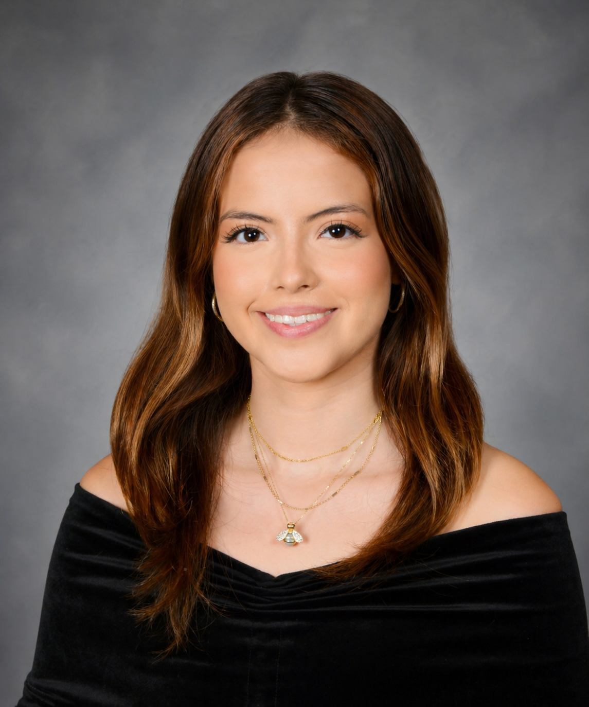

Journalism • Government & Politics • Communications

I am a journalism and government and politics student at the University of Maryland, College Park, expected to graduate in 2028.
University of Maryland, College Park
Bachelor of Arts in progress
Majors: Journalism and Government and Politics
Expected graduation: 2028
Oakland Unified School District | June 2025 – Present
Provide virtual administrative support, manage confidential digital records, respond to staff and applicant inquiries, support hiring workflows and contribute graphics and videos for social media.
Her Campus, UMD Chapter | August 2024 – Present
Write lifestyle, news and culture articles for a collegiate audience while developing reporting, research and deadline management skills.
Youth Radio | April 2023 – June 2024
Wrote articles, produced podcast episodes, conducted research and developed experience in fact-checking, media literacy and ethical reporting.
Alpha Chi Omega Sorority — Gamma Theta Chapter | November 2025 – Present
Support inclusive programming, educational workshops and community engagement efforts within the chapter.
My goal is to build a career in journalism, communications or public affairs, with a focus on storytelling, research and community-centered reporting.